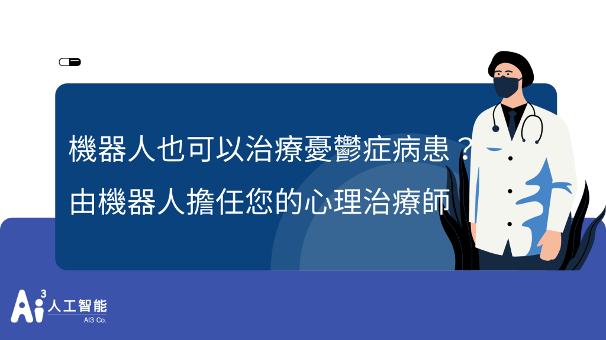

產業痛點
這兩年疫情狀況下，帶來給大眾的焦慮不安、工作改變的壓力感、恐懼安全健康問題 都帶給大眾許多心理負擔，也衍伸了心理諮商案件大幅度增加，而療癒商品也商機爆棚，許多人不想求助真實的心理諮商師的情況下，反而更願意與chatbot進行對話．
機器人特點/應用產業
在2017年史丹佛大學臨床心理學家 Alison Darcy 就創建了一個機器人叫“Woebot“，透過「認知行為治療技術」（Cognitive Behavioral Therapy，簡稱 CBT），來解決喪失功能的情緒、行為、認知問題等來治療患者相關憂鬱狀態問題。
而現在在歐美國家也十分盛行運用Chatbot技術來協助初期的心理問題諮詢，滿足因醫療人力不足及患者不同時間需求的效率，而我們可以透過Woebot案例來了解不同產業的使用者場景如何利用chatbot來協助使用者．除了心理健康產業之外，我想企業人資夥伴在做員工諮商的或是學校的心理輔導老師也可應用這樣的機器人設計來協助員工跟學生．
Woebot 主要透過使用者傳遞的訊息內容進行辨識，並反駁消極的自我談話和非理性、扭曲的認知思考。舉例來說，有個使用者傳遞：「我覺得我真的很沒用。」，Woebot 就會駁斥這個非理性信念，並且幫助病人了解妨礙自我發展後天的自我挫敗模式。而關於 Woebot 這個輔導機器人的性格，Darcy 將它比喻為是科米蛙（美國電視節目 The Muppet Show 角色之一）與史巴克（星際爭霸戰角色）的合體。科米蛙富有同情心，能分享心情，而史巴克是感性的。富有同理心的性情，再配上幽默感，Darcy 表示，希望透過這種性格設計引導人們遠離負面情緒。（摘要自inside文章https://reurl.cc/Rry2xG）
機器人如何解決問題
我們可以想像透過NLU自然語意機器人的功能來設計一個“Calmbot”機器人，透過與心理諮商師的協作，讓使用者在24hr都可以跟機器人進行諮詢、互動、陪伴，並透過語意判斷感知你的情緒提供適合的對話，而使用者有比較複雜問題想跟真人聊的時候，也可以透由機器人幫你推薦綁定適合的風格諮詢師，例如你喜歡讓你感覺輕鬆、溫暖的風格的諮詢師，而機器人可以定時提醒你進行一些行動跟練習，協助你擺脫憂鬱或負面情緒，不僅僅身體健康而已，心理健康更是重要．
結語
Chatbot可以在不同地方解決不同問題，像是客戶喜歡問重複的問題、功能的諮詢、想要即時的回覆、直接在機器人完成某些服務 例如預約報名或查詢資料等等，而科技與人的連結跟怎麼協助人，也是考驗設計者的創新創意喔，如果對Ai跟智能機器人有興趣，歡迎多多來跟我們互動交流．
➤產品連結https://ai3.cloud/ 與AI企業顧問互動
📍點此觀看🔍聊天機器人懶人包
其他文章